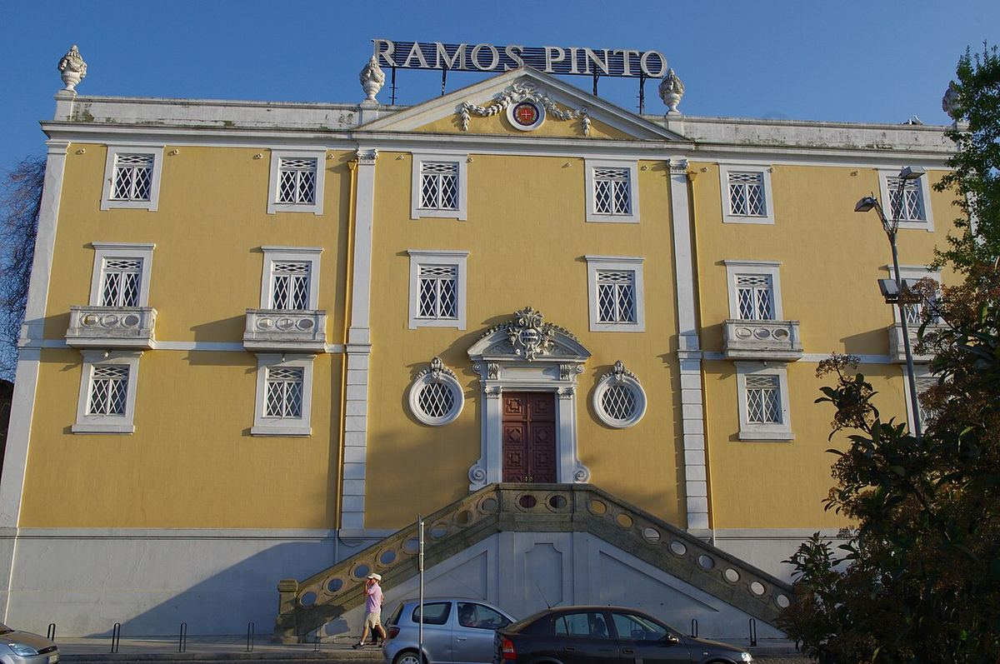

BIANCO
Casa di Porto fondata nel 1880 da Adriano Ramos Pinto, nota per i suoi storici manifesti pubblicitari, per gli studi sui vitigni del Douro e per la Quinta da Ervamoira.

Ramos Pinto fu fondata nel 1880 da Adriano Ramos Pinto, a differenza di molte case di Porto di origine britannica. L’azienda crebbe rapidamente grazie all’esportazione, soprattutto verso il Brasile, e divenne famosa per la sua comunicazione: commissionò manifesti e materiali pubblicitari in stile liberty, spesso audaci per l’epoca, che oggi fanno parte del suo patrimonio. La sua antica sede di Vila Nova de Gaia ospita un museo con questi materiali.
Negli anni Settanta e Ottanta José Ramos Pinto Rosas e suo nipote João Nicolau de Almeida condussero studi sui vitigni del Douro che aiutarono a individuare un piccolo gruppo di castas raccomandate, come la Touriga Nacional e la Touriga Franca, e a piantarle separatamente. La casa acquistò allora la Quinta da Ervamoira, nella valle del Côa, nel Douro Superior; sui suoi terreni furono scoperte incisioni rupestri del complesso del Côa, e la tenuta dispone di un piccolo museo. Altre proprietà sono Quinta do Bom Retiro, nella valle del Torto, e Quinta dos Bons Ares.
Dal 1990 Ramos Pinto appartiene al gruppo della maison di Champagne Louis Roederer. La gamma comprende tawny di quinta, come quelli di Ervamoira e Bom Retiro, Vintage, LBV e vini fermi del Douro, tra cui il marchio Duas Quintas.
Le sue cantine e il museo di Vila Nova de Gaia offrono visite con degustazione.